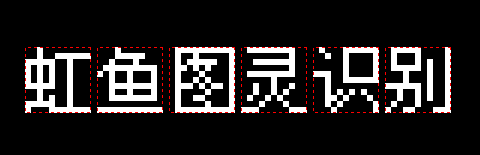

| 命令名称 | Incise_FixedLocation 固定位置切割 |
| 命令功能 | 固定位置字符切割 |
| 语法格式 | CharNum = TURING.Incise_FixedLocation(qx, qy, width, height, Column, cNum, Row, rNum) |
| 参数说明 |
qx：整数型，起点X坐标 qy：整数型，起点Y坐标 width：整数型，字符宽度 height：整数型，字符高度 Column：整数型，可选，列字间距，默认0 cNum：整数型，可选，列字符数量，默认1 Row：整数型，可选，行字间距，默认0 rNum：整数型，可选，行字符数量，默认1 |
| 返回值 | CharNum：整数型，字符切割数量(最大下标值) |
| 按键精灵 |
复制代码
'获取屏幕图像数据
Call TURING.Pixel_FromScreen(0,0,200,100)
'二值化处理
Call TURING.Filter_Binaryzation("0-128")
'显示获取的图像
Call TURING.Pixel_Preview()
'固定位置切割字符
数量 = TURING.Incise_FixedLocation(0,0,64,64,50,3)
For i = 0 To 数量
'字符预览
Call TURING.Incise_Preview(i)
Next
|
| 切割效果 |  |